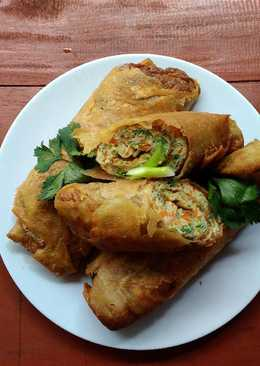

Bahan-bahan Lumpia Ayam Bom Purwokerto :Alamat: Jalan Sutejo No.18, Kedungwuluh, Purwokerto Barat, Kedungwuluh, Purwokerto Bar., Kabupaten Banyumas, Jawa Tengah 53131 Untuk informasi lain bisa hubungi di nomor telepon 082242019580 / 089692520256